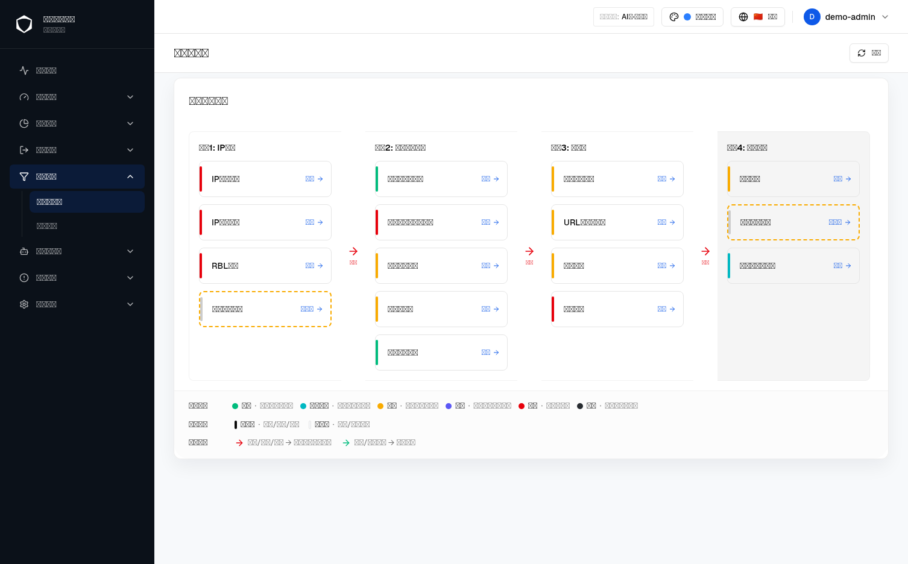
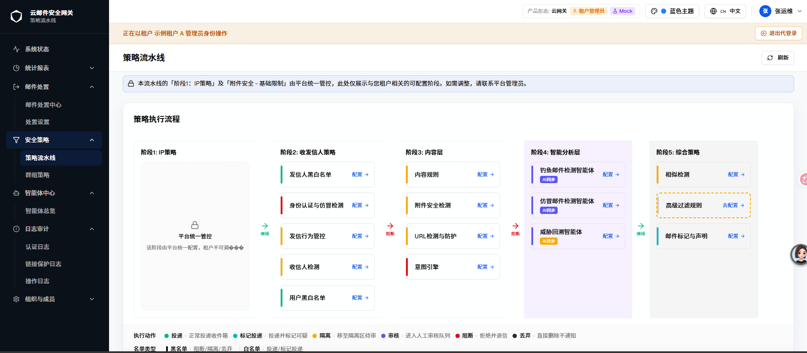

| 字段 | 内容 |
|---|---|
| 文档编号（文件 ticket） | GT-12938 |
| 需求名称 | GT-12940 内容规则顺序调整：调整到「阶段3：内容层」第一个策略 |
| 规格类型 | 增量规格（Incremental）· 展示顺序调整（不涉及策略逻辑、数据模型或接口变更） |
| 当前版本 | v2 |
| 生成日期 | 2026-08-13（v2 更新日期：2026-08-13） |
| 路由路径 | /zh/security/pipeline（策略流水线页面 → 「阶段3：内容层」卡片区；策略详情抽屉左侧导航同步复用同一顺序） |
| 组件路径 |
src/components/security/PolicyPipelinePage.tsx（stage3NavItems 数组——驱动策略详情抽屉左侧导航顺序；stages 常量中 stage3（阶段3：内容层）对应的 policies 数组——驱动卡片区展示顺序）
|
| webapp commit | 3ce30d8（feat: move content rule to stage 3 first policy for GT-12938） |
| 对照 spec commit | not-used |
| 历史对话记录 | 当前上下文可获得完整历史：本次顺序调整为本次会话内用户直接指令下完成的实现，验收标准（「内容规则」调整为「阶段3：内容层」第一个策略）在当前上下文中完整可得，非转述或推测 |
| 事实源优先级 | 1. 用户当前描述（GT-12940 需求名称与验收标准）；2. webapp 当前源码与 git show 实际 diff；3. agent-browser 浏览器实测（变更前/变更后对照截图）；4. 其他原始 spec，仅作差异对照（doc/html_spec-version/GT-12731.html 收录本页面此前的完整增量历史，含 GT-11651「内容规则执行动作调整」等既往变更，本文档新建独立记录，未修改 GT-12731.html 内容，仅作交叉参考）。 |
| 浏览器验证状态 | 已通过 agent-browser 打开 /zh/security/pipeline 页面，分别在变更前（git checkout 至上一次提交的 PolicyPipelinePage.tsx）与变更后（当前工作区版本）两个状态下截取「阶段3：内容层」卡片区整列截图，逐一比对卡片顺序变化。见 §1.2 截图。 |
| 沙箱渲染限制 | 图 S-1（变更前）来自本沙箱的无头浏览器环境，该沙箱缺少中文字体，导致截图中的中文文字统一渲染为方框（tofu box）占位符，而非实际字形缺失或产品文案异常。这是渲染环境限制，不是产品缺陷，性质与既有文档 GT-12865 中记录的 D-004 相同；本文档已尝试开启页面右上角「Mock」模式开关（osgateway_mock_enabled），但该开关只改变数据来源（阶段4卡片内容切换为 AI 智能体数据），未能修复本次「阶段3：内容层」区域截图的中文字体渲染，故 S-1 仍保留方框占位符。图 S-2（变更后）已由用户在本地真实浏览器环境手动截取并提供，中文文字正常显示，不受本沙箱字体限制影响，可作为本次调整最终效果的直接证据。S-1 交互预览下方的表格与说明文字均依据 messages/zh.json 中 pipeline.content/pipeline.attachment/pipeline.url/pipeline.intentEngine 等真实 i18n 文案与源码逐一核对后如实转录，读者可结合 S-1 中卡片的相对位置与 S-2 的真实文案对照理解实际效果。已在 D-001 中记录该限制及其解决状态，避免被误认为文案渲染缺陷。 |
| 变更类型 | 功能变更（策略展示顺序调整，不涉及策略配置逻辑、数据模型或后端接口） |
configurable（可独立配置），「意图引擎」标记为 forced（强制生效），该分类未发生变化。
「阶段3：内容层」卡片区与其中策略的排列顺序为静态常量数组（stage3NavItems / stages 中 stage3.policies），不依赖产品形态或角色进行条件渲染，理论上各形态与角色下的顺序表现一致。本次截图仅在 AI版·单租户 / 平台管理员下实拍，其余形态 / 角色未逐一验证，标记为「?」。
| 功能 / 元素 | 变更 | AI-单 平台管理员 |
传统-单 平台管理员 |
云-多 平台管理员 |
云-多 租户管理员 |
AI-多 平台管理员 |
AI-多 租户管理员 |
传统-多 平台管理员 |
传统-多 租户管理员 |
|---|---|---|---|---|---|---|---|---|---|
| 「阶段3：内容层」卡片区展示顺序 | #1 | ✅ | ? | ? | ? | ? | ? | ? | ? |
| 策略详情抽屉左侧导航展示顺序 | #1 | ✅ | ? | ? | ? | ? | ? | ? | ? |
#1 = 变更 1（见目录）。
问题背景：策略流水线页面「阶段3：内容层」原有的策略展示顺序为「附件安全检测 → URL检测与防护 → 内容规则 → 意图引擎」。产品要求将「内容规则」提升为该阶段内的第一个策略，使其在卡片区与策略详情抽屉左侧导航中均排在最前，优先于「附件安全检测」和「URL检测与防护」。
方案：调整 PolicyPipelinePage.tsx 中两处共同决定展示顺序的常量数组，二者保持一致：
stage3NavItems（驱动策略详情抽屉左侧导航的顺序）：数组首项由 {'{'} key: 'attachment', ... {'}'} 调整为 {'{'} key: 'content', ... {'}'}，原「内容规则」条目从数组第三位移动到第一位，「附件安全检测」「URL检测与防护」依次后移一位；stages 常量中 stage3（阶段3：内容层）对应的 policies 数组（驱动卡片区展示顺序）：同步做相同调整，content 条目移动到数组第一位；intentEngine）固定保留在两个数组的末位，不参与本次排序调整——该策略本身标记为 type: 'forced'（强制生效的综合判定策略），产品定位与前三项 configurable（可独立配置隔离/检测类）策略不同，调整后仍作为阶段3的最后一项。
调整后阶段3四项策略的最终顺序为：内容规则 → 附件安全检测 → URL检测与防护 → 意图引擎。由于卡片区与抽屉左侧导航共用同一份数据顺序（源码注释「此处与下方 stages[stage3].policies 数组顺序保持一致，二者共同决定卡片区与抽屉左导航的展示顺序」），两处入口的视觉顺序始终保持同步，不会出现卡片区与抽屉导航顺序不一致的情况。本次调整不涉及任一策略的 type（configurable/forced）分类、functional 标记、i18n key 或详情抽屉内的具体配置内容，纯粹是数组元素顺序调整。

configurable）、「URL检测与防护」（第二张，橙色左边条）、「内容规则」（第三张，橙色左边条）、「意图引擎」（第四张，红色左边条 forced）。取自 git checkout 至本次变更提交之前的源码版本实拍，因沙箱缺少中文字体，卡片标题文字渲染为方框占位符，用于与变更后对照。
forced，位置不变）。与图 S-1 对比可见前三张卡片的相对顺序发生轮转，第四张卡片位置不变；本图由用户在本地真实浏览器环境（租户管理员视角）手动截取提供，中文文案清晰可读，可直接核对「内容规则」「附件安全检测」「URL检测与防护」「意图引擎」四个标题文字与描述文案。| 元素 | 变更前顺序 | 变更后顺序 | 说明 |
|---|---|---|---|
「内容规则」卡片（key: 'content'） |
阶段3第 3 位 | 阶段3第 1 位 | 标题文案 pipeline.content = 「内容规则」；描述文案 pipeline.contentDesc = 「邮件内容关键词过滤」；type: 'configurable'（可独立配置），左边条橙色，functional: true，本身的配置内容与交互未发生变化，仅位置提升 |
「附件安全检测」卡片（key: 'attachment'） |
阶段3第 1 位 | 阶段3第 2 位 | 标题文案 pipeline.attachment = 「附件安全检测」；描述文案 pipeline.attachmentDesc = 「附件类型和大小检查」；因「内容规则」提升到首位而整体后移一位，配置内容未变 |
「URL检测与防护」卡片（key: 'url'） |
阶段3第 2 位 | 阶段3第 3 位 | 标题文案 pipeline.url = 「URL检测与防护」；描述文案 pipeline.urlDesc = 「恶意URL检测和过滤」；同样因前移调整而整体后移一位，配置内容未变 |
「意图引擎」卡片（key: 'intentEngine'） |
阶段3第 4 位 | 阶段3第 4 位（不变） | 标题文案 pipeline.intentEngine = 「意图引擎」；type: 'forced'（强制生效），左边条红色，作为综合判定策略固定保留在阶段3末位，未参与本次排序调整 |
策略详情抽屉左侧导航（stage3NavItems） |
附件安全检测 / URL检测与防护 / 内容规则 / 意图引擎 | 内容规则 / 附件安全检测 / URL检测与防护 / 意图引擎 | 与卡片区共用同一排序意图，改动同步生效，进入任一策略详情抽屉时左侧导航条目顺序与卡片区顺序完全一致 |
| 状态 | 部分解决 |
| 描述 | agent-browser 打开 /zh/security/pipeline 页面截图时，「阶段3：内容层」卡片区标题、描述等中文文字统一渲染为方框（tofu box）占位符，页面结构、卡片数量、左边条颜色与相对排列顺序均正常渲染，仅中文字形缺失。已尝试开启页面右上角「Mock」模式开关（osgateway_mock_enabled）及重启沙箱浏览器会话重新扫描本机已预置的 NotoSansSC.otf 字体文件，均未修复该沙箱截图环境的中文渲染，判断为 agent-browser 无头浏览器沙箱与本机文件系统隔离、且该工具不提供字体安装接口所致，属工具环境限制，非产品缺陷。 |
| 影响 | 图 S-1（变更前）的卡片标题文字为方框占位符，无法直接从截图像素读出「附件安全检测」等中文文案，但卡片相对排列位置（第一/第二/第三/第四张）清晰可辨。图 S-2（变更后）已由用户在本地真实浏览器环境手动截取并提供，中文文字正常显示，不再受此限制影响，可直接作为本次调整最终效果（内容规则→附件安全检测→URL检测与防护→意图引擎）的证据。 |
| 处理 | 本文档未在 agent-browser 沙箱环境内进一步排查字体缺失根因或寻求安装中文字体包的替代方案；图 S-1 保留原始沙箱实拍（未替换为手绘占位图），并在 figcaption 与 1.3 节表格中补全真实中文文案作为替代事实依据；图 S-2 已替换为用户提供的手动截图（文件名 GT-12938-S2-stage3-after-order-manual-zh.png），彻底解决变更后效果截图的中文可读性问题 |
| 验证依据 | agent-browser 截图 GT-12938-S1-stage3-before-order-light-1506x936.png（变更前，沙箱实拍）；用户手动截图 GT-12938-S2-stage3-after-order-manual-zh.png（变更后，本地真实浏览器，租户管理员视角，中文正常显示）；messages/zh.json 中 pipeline.content/pipeline.attachment/pipeline.url/pipeline.intentEngine 等 i18n key 的真实取值用于交叉核对 S-2 中的文案与源码一致 |
| 状态 | 待确认 |
| 问题 | 本次调整的两个常量数组（stage3NavItems / stages.stage3.policies）为静态数据，不包含任何按产品形态或角色分支的条件逻辑，理论上应在全部形态与角色下表现一致。但本次截图仅在 AI版·单租户 / 平台管理员下完成，未在传统版、云网关多租户、AI版多租户等其余形态与角色下逐一复核。 |
| 影响 | 若后续发现某形态或角色存在独立的策略展示顺序覆盖逻辑（本次未在源码中发现此类分支），可能与本次调整结论不一致 |
| 建议 | 如需完整覆盖验证，可在具备多产品形态切换条件的环境中补充抽样截图；当前基于源码为静态常量数组的事实，判断该调整对全部形态/角色生效 |
| 版本 | 日期 | commit | 摘要 |
|---|---|---|---|
| v1 | 2026-08-13 | 3ce30d8 |
新建 GT-12938.html，按 html-spec-PM-version 技能规范记录 GT-12940「内容规则顺序调整：调整到"阶段3：内容层"第一个策略」的完整实现：目录含 A/B 固定章节 + GT-12940 一级需求 + 变更 1 二级 + 1.1/1.2/1.3 三级结构；元信息与事实源（含沙箱中文字体渲染限制说明）、产品形态 × 角色矩阵（B）。变更 1（PolicyPipelinePage.tsx 中 stage3NavItems 与 stages.stage3.policies 两处顺序数组同步调整，「内容规则」由阶段3第 3 位提升为第 1 位，「附件安全检测」「URL检测与防护」依次后移一位，「意图引擎」固定保留末位不变）；补充真实 agent-browser 浏览器实测截图 S-1（变更前）、S-2（变更后）（浅色主题 · 1506×936，因沙箱缺少中文字体渲染为方框占位符），逐元素说明表均依据 messages/zh.json 真实 i18n 文案核对转录；新增差异标注 D-001（沙箱中文字体缺失导致截图文字方框化的环境限制说明）、待确认事项 Q-001（其余产品形态/角色展示顺序待抽样复核）；文档不含 <script>、表单控件或事件属性，已通过残留扫描确认无匹配。 |
| v2 | 2026-08-13 | 3ce30d8 |
用户手动截取本地真实浏览器环境下「策略流水线」页面截图（租户管理员视角，中文正常显示），替换图 S-2（变更后）为该手动截图（文件 GT-12938-S2-stage3-after-order-manual-zh.png），解决变更后效果证据的中文可读性问题；同步更新 1.2 节 figure/figcaption/alt 文字、A 节「沙箱渲染限制」行、D-001 差异标注（状态由「已知·环境限制」调整为「部分解决」）；图 S-1（变更前）仍为沙箱实拍、保留原有方框占位符说明，未做变更；未修改 §1.1 方案概述、§1.3 逐元素说明表、B 矩阵、Q-001 待确认事项及任何源码相关内容。 |